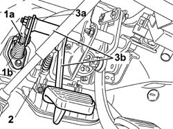

3330B27 clutch pedal - r r for rhd versions
- Path
- Procedures > 33 BRAKES > 3330 HYDRAULIC BRAKE SYSTEM > 3330B pedal unit > 3330B27 clutch pedal - r r for rhd versions
- Kind
- repair procedure (removal / refitting; the operation number is the code)
- Applies to
- engines: 1.2 8v; all production periods
- Interactive page
- https://sloeber94.github.io/elrnDB-fDbl/en/#/2584651
Applies to: engines: 1.2 8v; all production periods; only with equipment: Right hand drive
 Removing
Removing
 Refitting
Refitting1. Release the clutch pump push rod (1b) retaining spring (1a).
2. Release the retaining spring for the clutch pedal return spring and release the actual spring.
3. Undo the nut (3a) fixing the clutch pedal pin and extract the pin (3b) keeping the pedal complete with spring.

Applies to: engines: 1.2 8v; all production periods; only with equipment: Right hand drive
Refitting
RemovingPosition the idler and the clutch pedal in the special housing in the pedal assembly and tighten the fixing nut after inserting the pin.
Secure the clutch pump push rod to the idler using the special spring.
Secure the reaction spring in the housing in the pedal assembly using the special spring.